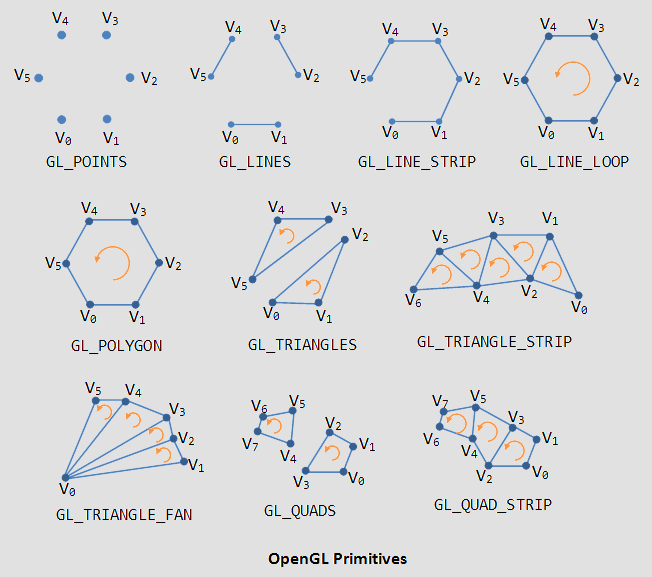

A minimal introduction to “good old-fashioned” OpenGL 1
It may be worth seeing how things used to be done, because although it is less flexible or efficient than OpenGL 2.0+, in many ways it is easier to learn. OpenGL 2.0 might also be easier to grasp after understanding the older way.
The first thing to learn is that OpenGL is highly stateful. For example, gl.Color() will set the current color, and any geometry drawn after it will use that color, until another gl.Color() changes it. You can think of it like the current brush in your hand. OpenGL also uses state to store spatial transformations, such as the view and object (gl.MODELVIEW) and the current perspective (gl.PROJECTION).
Geometry
Geometry in OpenGL (all versions) is specified as a series of vertices, where each vertex has a position in space, and possibly other attributes such as color, texture coordinate, normal direction, and so on. Vertices simply define a set of points, but we can instruct OpenGL to interpret them as surfaces (or lines, or points) using the following constants:

In OpenGL 1 this is done using the `gl.Begin() call, e.g. gl.Begin(gl.LINES). After a gl.Begin() we can issue a number of vertices using gl.Vertex(), and finally finish our shape using gl.End():
local gl = require "gl" function draw() gl.Color(1, 1, 1) gl.Begin(gl.LINES) gl.Vertex(0, 0, 0) gl.Vertex(1, 1, 0) gl.End() end
To change attributes of each vertex, we must call the attribute setters before the corresponding gl.Vertex():
local gl = require "gl" function draw() gl.Begin(gl.LINES) gl.Color(0, 0, 1) gl.Vertex(0, 0, 0) gl.Color(1, 0, 0) gl.Vertex(1, 1, 0) gl.End() end
Some common geometries for 2D rendering have been abstracted in the draw2D.
Transformation stacks
If we want to render the same geometry at different locations, scales and rotations in space, we would normally have to recalculate the positions of each argument to each gl.Vertex(). Instead, OpenGL provides transformation stacks. The default stack is the gl.MODELVIEW stack, which represents the current location, scale and orientation of geometry in the world. You can translate, rotate and scale the modelview. You could think of translation as meaning changing the ‘start point’ (in mathematical terms, the “origin”) of drawing. Or you could think of it as moving the underlying “graph paper” that we are drawing onto. Similarly for the rotating the paper, or scaling it.
It’s easier to see this via the draw2D module:
local draw2D = require "draw2D" function draw() draw2D.translate(-1, 0) draw2D.scale(0.5, 0.5) draw2D.color(1, 0, 0) draw2D.rect(0, 0, 1, 1) draw2D.color(1, 1, 0) draw2D.ellipse(0, 0, 1, 1) end
Unlike gl.Color(), draw2D’s translate(), scale() and rotate() do not replace the previous values; instead they accumulate on top of each other into a hidden state called the transformation matrix, which is a fancy name for how we get from the coordinate system in which we are currently drawing to the coordinate system of the actual output pixels.
Note that the order of transformations is important: translate followed by scale is quite different to scale followed by translate. For controlling an object, usually the order used is “translate, rotate, scale”.
The transformation stack is called a stack because you can push and pop it:

Pushing the stack allows you to modify the transformation temporarily, and then later pop back to the previous state. Usually OpenGL provides up to 16 possible transformations on the stack.
local draw2D = require "draw2D" function draw() draw2D.push() draw2D.translate(-1, 0) draw2D.scale(0.5, 0.5) draw2D.color(1, 0, 0) draw2D.rect(0, 0, 1, 1) draw2D.pop() draw2D.color(1, 1, 0) draw2D.ellipse(0, 0, 1, 1) end
For more complex transformations, and 3D transformations, use gl.LoadMatrix() (to replace the previous value) or gl.MultMatrix() (to accumulate with the previous value) in combination with one of the matrix transform generators in the mat4 module:
-- this does the same thing as the previous script: local gl = require "gl" local draw2D = require "draw2D" local mat4 = require "mat4" function draw() gl.PushMatrix() gl.LoadMatrix(mat4.translate(-1, 0, 0)) gl.MultMatrix(mat4.scale(0.5, 0.5, 1)) draw2D.color(1, 0, 0) draw2D.rect(0, 0, 1, 1) gl.PopMatrix() draw2D.color(1, 1, 0) draw2D.ellipse(0, 0, 1, 1) end
With this we can easily now create ideal visual forms, and then create instances of these forms with different position, scale and rotation, however we please. We're about ready for some generative design…
Warning: if you want to do something computational according to the position, it’s better not to use the OpenGL transformation stack, as it does not give you access to the computed position. Instead you'll have to compute it manually…